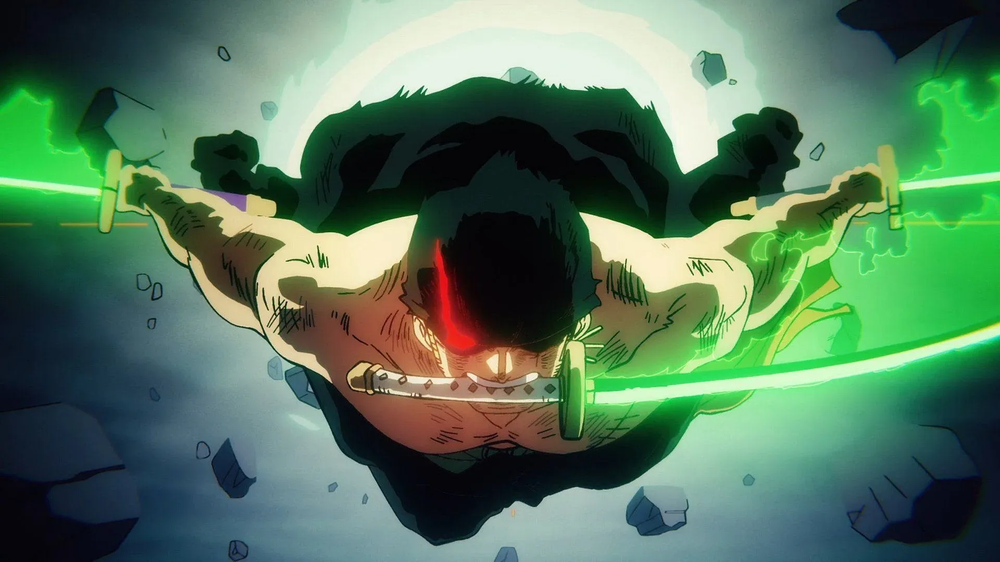
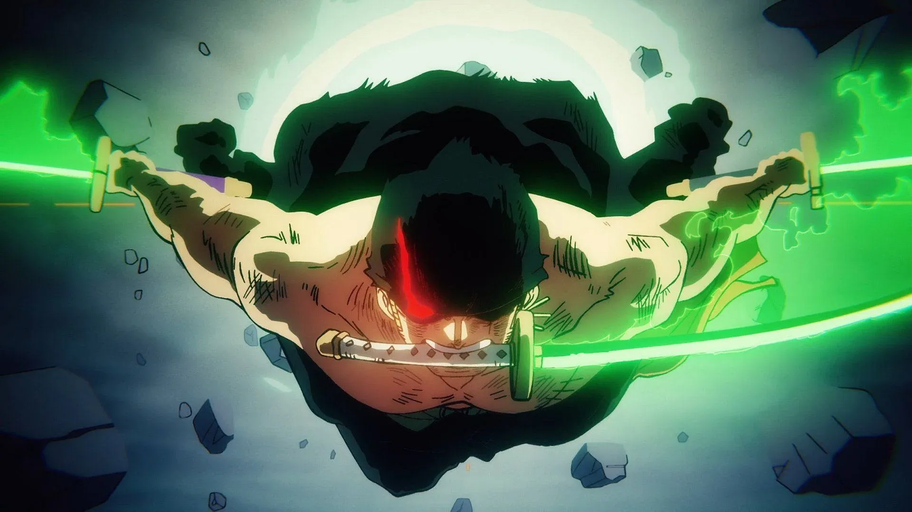
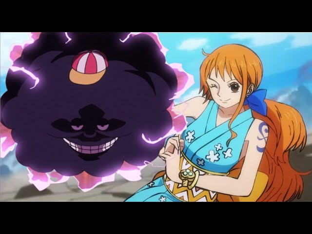
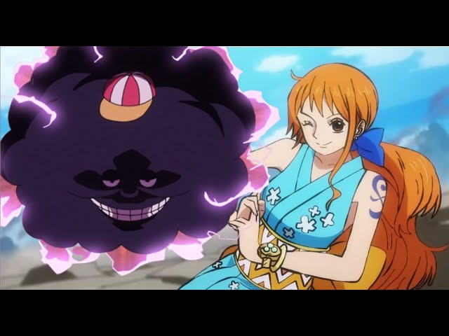

Monkey D. Luffy
Monkey D. Luffy is the captain of the Straw Hat Pirates, and dreamt of being a pirate since childhood from the influence of his idol and mentor Red-Haired Shanks.
 

Roronoa Zoro
Roronoa Zoro is a the swordsman of the Straw Hat Pirates, member of the monster trio, and is one of the strongest members of the crew.
 

Nami
"Cat Burglar" Nami is the navigator of the Straw Hat Pirates and one of the Officers of the Straw Hat Grand Fleet, who dreams of drawing a map of the entire world.
Usopp
"God" Usopp is the sniper of the Straw Hat Pirates. Despite his usual cowardice, Usopp dreams of becoming a brave warrior of the sea just like his father.

.jpg)
Vinsmoke Sanji
"Black Leg" Sanji, born as Vinsmoke Sanji, is the cook of the Straw Hat Pirates. He is one of the top three fighters of the Straw Hats, who are known as the "Monster Trio".
Chopper
Tony Tony Chopper, also known as "Cotton Candy Lover" Chopper, is the doctor of the Straw Hat Pirates. Chopper is a reindeer that ate the Hito Hito no Mi.
Nico Robin
Nico Robin, also known by as "Devil Child" is the archaeologist of the Straw Hat Pirates. She is one of few people in the world with the ability decipher Poneglyphs.


Franky
Franky is the shipwright of the Straw Hat Pirates. After an incident that resulted in his body being heavily damaged he augmented himself into a cyborg.


Jimbei
"First Son of the Sea" Jimbei is the helmsman of the Straw Hat Pirates. Jimbei is a whale shark fish-man and a powerful master of Fish-Man Karate.
.png)